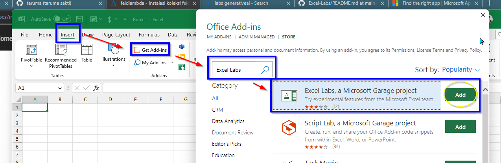
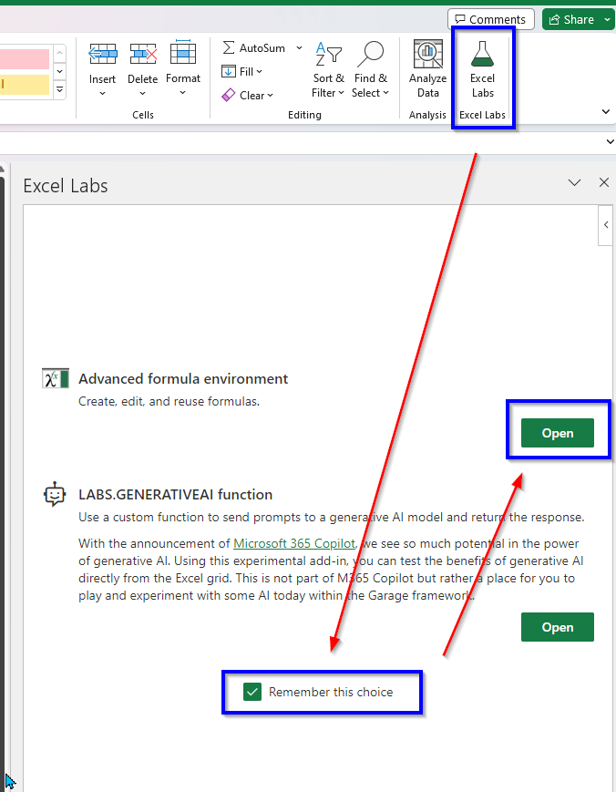
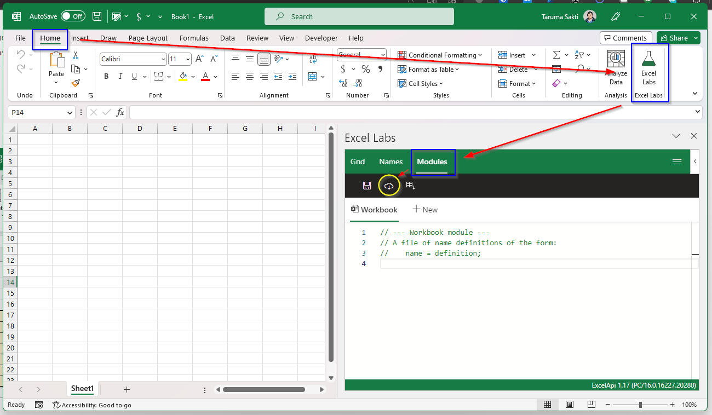

Instalasi koleksi feidlambda
Panduan pemasangan koleksi feidlambda menggunakan Excel Labs: Advanced Formula Environment.
Sejak April 2023, add-ins Advanced Formula Environment menjadi bagian fitur dari add-ins Excel Labs. Excel Labs sendiri adalah add-ins yang menyediakan fitur eksperimental oleh tim Microsoft Excel.
Panduan ini untuk instalasi dan penggunaan Excel Labs: Advanced Formula Environment.
1 Excel Labs
Excel Labs merupakan add-ins berisikan fitur eksperimental oleh tim Microsoft Excel. Pada add-ins ini tersedia Advanced Formula Environment untuk memudahkan pengembangan dan penggunaan fungsi LAMBDA atau manipulasi formula di dalam Microsoft Excel. Add-ins tersebut wajib dipasang untuk dapat menggunakan koleksi feidlambda. Fitur LABS.GENERATIVEAI, saat ini tidak digunakan dalam penggunaan feidlambda.
Di versi terbaru Excel 365, menu Add-ins berada di ribbon Home > Add-ins, atau dapat diakses melalui File > Get Add-Ins.
- Install add-ins Excel Labs dari menu
Insert>Get Add-ins> Cari Excel Labs (AFE).

2 Advanced Formula Environment
Advanced Formula Environment (AFE) adalah add-in untuk Excel yang memungkinkan Anda melihat, memformat dan mengedit rumus atau fungsi Excel. Sejak April 2023, add-in Advanced Formula Environment tergabung dalam satu add-ins bernama Excel Labs.
- Untuk memulai penggunaan AFE, buka Excel Labs melalui menu ribbon
Home>Excel Labs. - Pada feature gallery, terdapat ada dua fitur yaitu Advanced Formula Environment dan
LABS.GENERATIVEAIfunction. - Centang “Remember this choice” kemudian buka AFE dengan mengklik “Open” disamping tulisan AFE.

Feature gallery bisa dibuka melalui menu burger dan memilih feature gallery.
3 Import menggunakan AFE
Setelah AFE terpasang di Microsoft Excel, lakukan import dengan membuka AFE melalui Home > Excel Labs > (AFE) > Modules > Import.

4 Salin Github Gist URL
Isi “Github Gist URL” dengan link koleksi lambda yang tersedia. Checklist ✅ bagian “Add formulas to new module” dan isi nama module dengan nama koleksi (contoh: feid).

5 Save / Sync module
Setelah import seluruh koleksi yang digunakan dan berhasil, lakukan saving (sync) yang bertujuan untuk menerapkan module ke lembar kerja Excel. Shortcut untuk save yaitu Ctrl + S.

6 Gunakan koleksi lambda
Selesai save, fungsi feidlambda bisa langsung digunakan.

7 Baca dokumentasi feidlambda
Dokumentasi feidlambda versi terbaru (v0.4) bisa baca di halaman feidlambda (latest). API atau struktur LAMBDA sudah dibuat konsisten sejak versi v0.3+. Panduan migrasi dari v0.2 ke v0.3 bisa baca di halaman Migrasi feidlambda v0.2 ke v0.3.
Jangan lupa juga untuk membaca daftar istilah yang digunakan dalam pada dokumentasi dan pengembangan feidlambda.